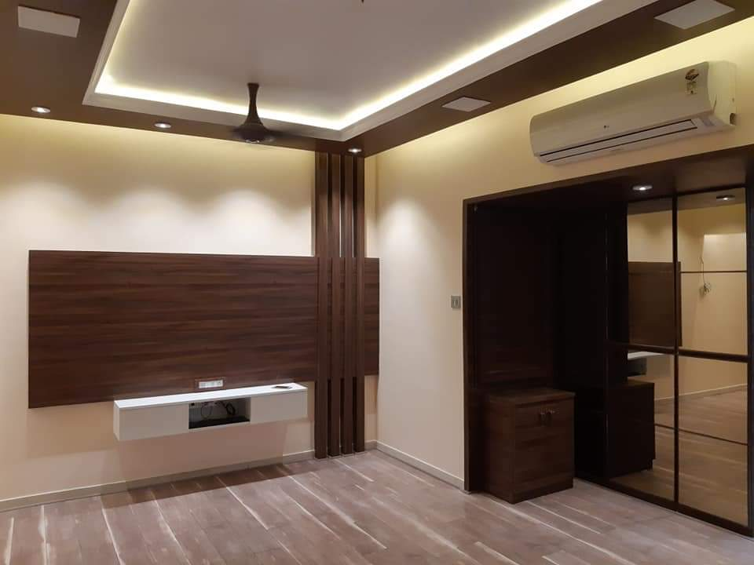
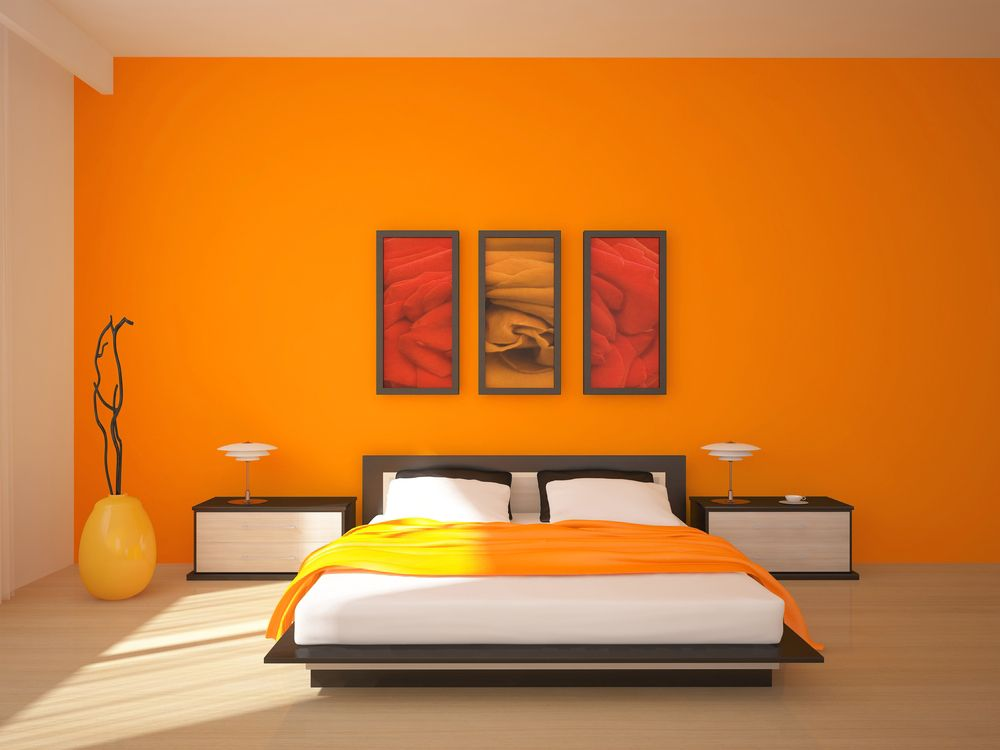

In simple terms, a decorative false ceiling is a fitted ceiling that hangs below the original ceiling of a room or home. It’s usually suspended by wooden or metal frames and the illusion it brings of a lower ceiling, sometimes with parts of the original ceiling on display, has earned it the moniker ‘dropped ceiling.’ .
Homes typically have several kinds of home wiring, including electrical wiring for lighting and power distribution, permanently installed .
Civil Work is primarily that work which is fixed to the house and cannot be changed easily. It includes tiling, bathroom renovation, breaking any walls, fixing the kitchen platform, electrical work, etc. It is usually more messy and tedious compared to the other work such as furniture and kitchen. 
Not only is custom made furniture a quality choice, but it’s also a great way to ensure that you’re getting items designed in your unique style. Every item you create will add a stunning element to the room. It’s also the perfect way to showcase your own personality, interests, and design choices.
Several different systems make up a house’s plumbing. Fresh water is delivered to a home through water supply pipes from the utility or a well and is then distributed to sinks, toilets, washers, bathtubs, and related fixtures. The drain-waste-vent system carries away used water and wastes to sewers or septic tan
The most important spaces in our lives are inside our homes. Most of these spaces can benefit from a new look.The most cost effective and quickest home improvement project is interior painting. You can transform the look of a room or your entire house just by using paint! Interior house painting can be as simple or as elaborate as you prefer. In order to be the one in control, you need information. That’s what this page is all about. Connecting you to the basic interior painting information you need to complete the transformation of your living space successfully.